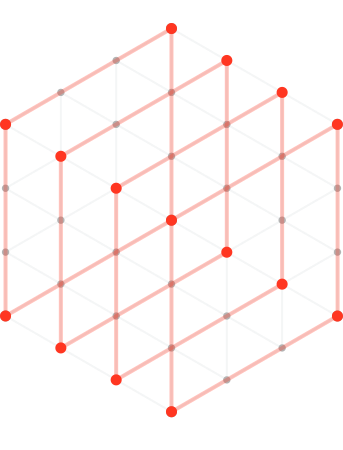

| Layer | What we built | What it showed |
|---|---|---|
| Data foundation | Five source systems unified around the subscriber, with quality rules and one Metric View | Three team counts became one governed number, within 0.25% of the ledger |
| Predictive ML | Viewership forecast and churn model, monitored and retrained in Unity Catalog | Dallas flagged at 97% before kickoff; about 30,000 subscribers at risk found |
| GenAI | An agent over metrics, policies and transcripts; a personal message per subscriber | The why in about 90 seconds; 28,269 messages for about $58 |
| Command Center | Four screens; subscriber lookups and approvals in Lakebase; a person approves | About 2,100 saved: $302k protected for $42k, about 7x |